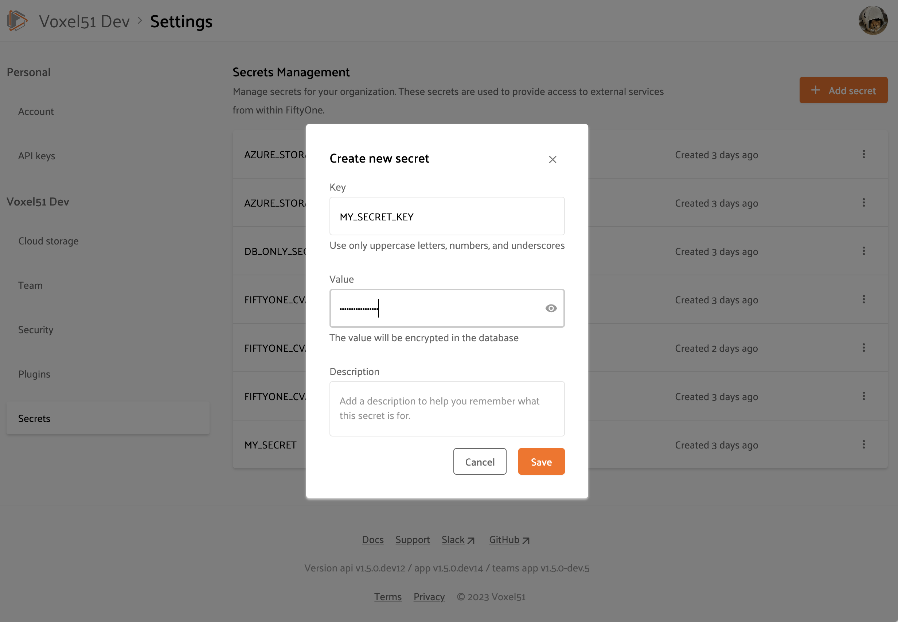

FiftyOne Teams Secrets ¶¶
FiftyOne Teams provides a Secrets interface for storing sensitive information such as API tokens and login credentials in a secure manner for use by your Team’s plugins.
Managing secrets through the Teams App is a straightforward and secure way to configure connections to and integrations with external services and APIs such as GCP, OpenAI, CVAT, etc without the need to change the configuration or environment variables of your FiftyOne Teams containers and restarting them. Instead, you can simply add or remove secrets using the Teams UI and they will immediately be available to any plugins that require them.
Adding secrets ¶¶
Admins can add, configure, and remove secrets in the FiftyOne Teams App by navigating to the Secrets Management page under Settings > Secrets:

When you tap on the “Add secret” button, you will see that a secret is comprised of a key, value, and optional description:

Secret keys must be upper snake case strings like MY_SECRET_KEY.
Secret values are stored encrypted in the database and are only available to and decrypted at runtime by internal services that have access to your encryption key.
Note
Only Admins have access to the Secrets page. However, once added, any App component or plugin requiring secret values can access them via the Secrets interface.
Using secrets ¶¶
In order to access secrets, plugins must declare the
secrets that they may use by adding them to the plugin’s fiftyone.yml file.
For example, the @voxel51/annotation plugin declares the following secrets:
secrets:
- FIFTYONE_CVAT_URL
- FIFTYONE_CVAT_USERNAME
- FIFTYONE_CVAT_PASSWORD
- FIFTYONE_CVAT_EMAIL
- FIFTYONE_LABELBOX_URL
- FIFTYONE_LABELBOX_API_KEY
- FIFTYONE_LABELSTUDIO_URL
- FIFTYONE_LABELSTUDIO_API_KEY
At runtime, the plugin’s execution context will automatically be hydrated with
any available secrets that are declared by the plugin. Operators access these
secrets via the ctx.secrets dict:
def execute(self, ctx):
url = ctx.secrets["FIFTYONE_CVAT_URL"]
username = ctx.secrets["FIFTYONE_CVAT_USERNAME"]
password = ctx.secrets["FIFTYONE_CVAT_PASSWORD"]
email = ctx.secrets["FIFTYONE_CVAT_EMAIL"]
The ctx.secrets dict will also be automatically populated with the
values of any environment variables whose name matches a secret key declared
by a plugin. Therefore, a plugin written using the above pattern can run in
all of the following environments with no code changes:
-
A FiftyOne Teams deployment that uses the Secrets interface
-
A FiftyOne Teams deployment that injects secrets directly as environment variables
-
A locally launched App via the Teams SDK
-
Open source FiftyOne